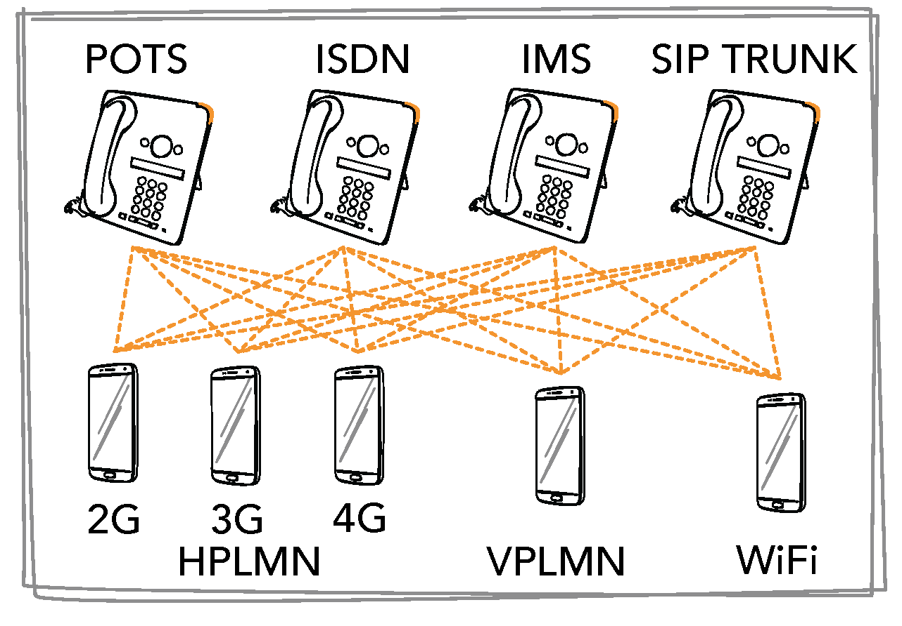
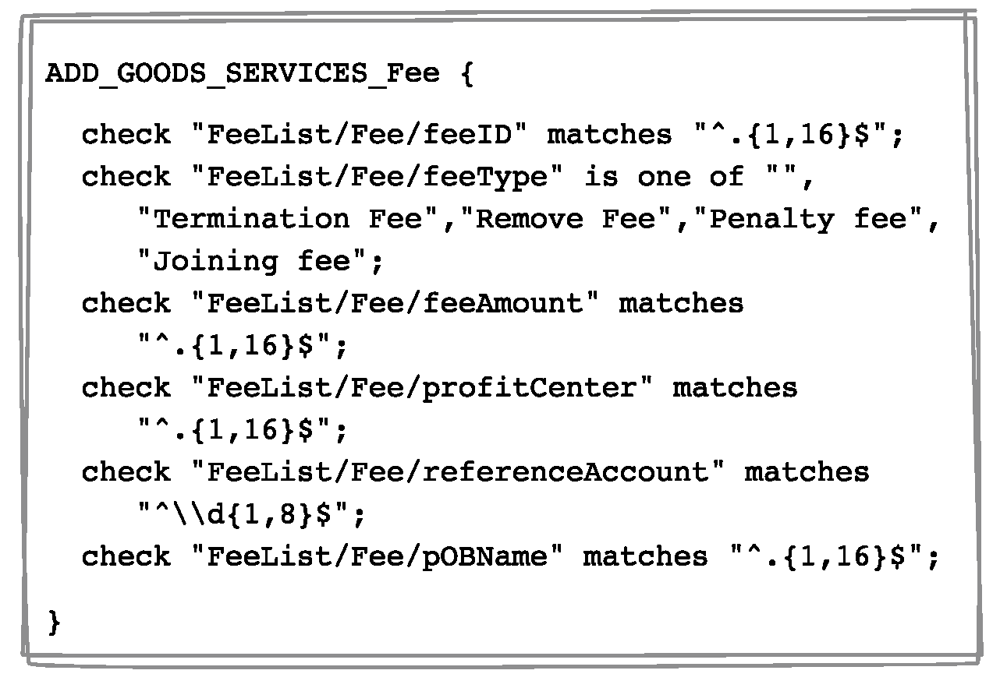
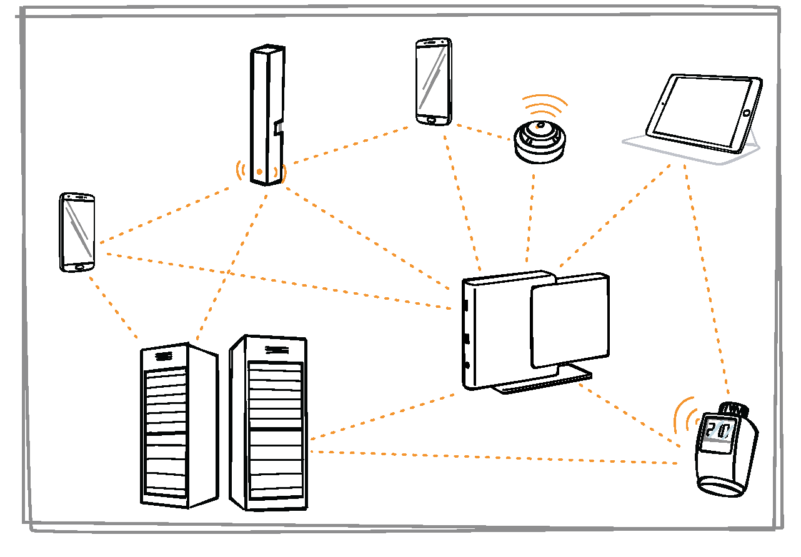
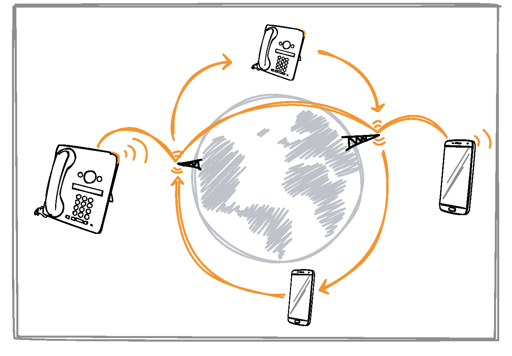
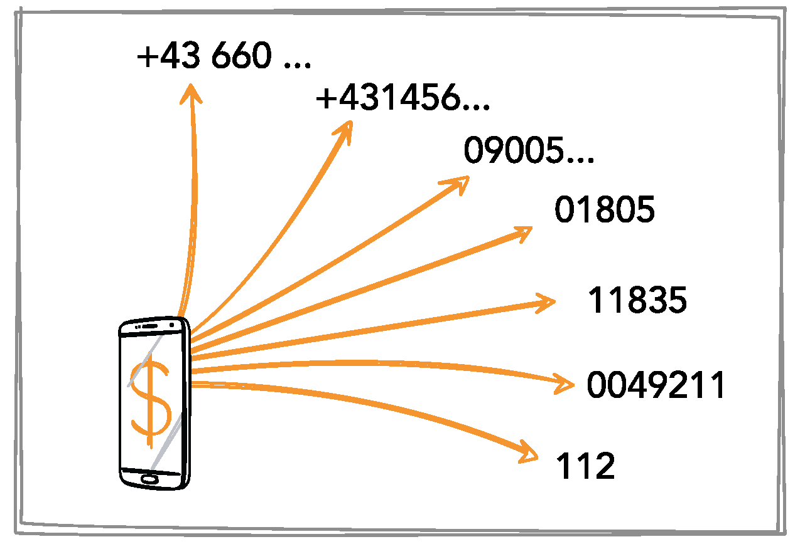
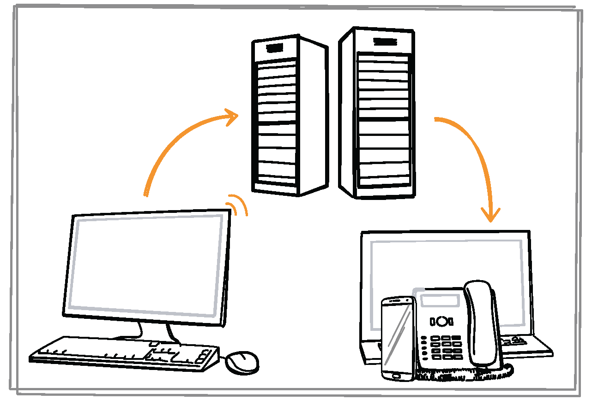
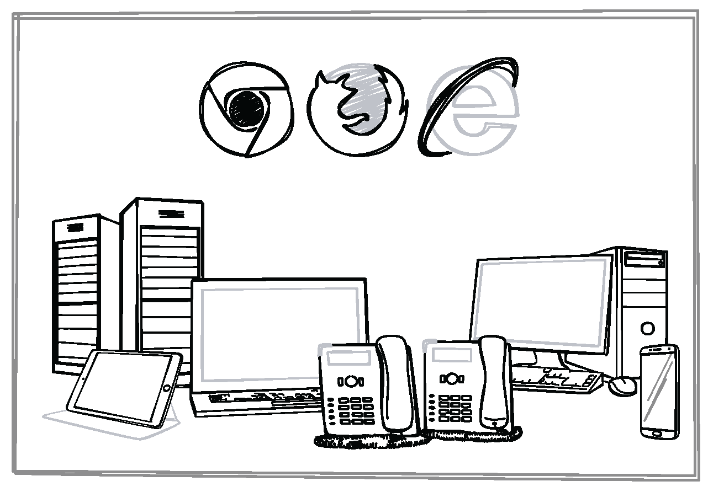
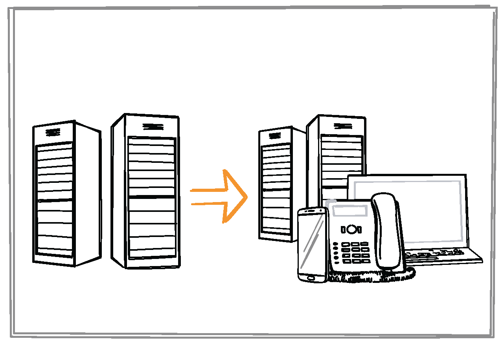

Eight Important Automated Testing Scenarios Where INTACT Excels
INTACT is well suited for automating a variety of projects, including core network testing, Internet of Things and even complex migration projects. In this article, we’ll cover eight of the most popular use cases that our customers use INTACT for:
- Core network testing
- IFRS testing
- Internet of Things
- Charging conformity & Tariff verification
- End-to-end testing
- Acceptance testing
- Migration testing
Core Network Testing

Core network testing involves checking that the fundamental components of a network are behaving the way that they should over the course of a system life cycle. This includes many regression tests for patches, updates, upgrades and network element replacement projects. The core network features INTACT tests include:
- Making and receiving different types of phones calls using:
- Mobile phones (2G, 3G, 4G, WiFi, VoLTE)
- VoIP phones
- ISDN phones
- POT phones
- Sending and receiving SMS
- Managing data connections and uploading/downloading content
- Roaming
- Verifying the speech channel of a call
- Verifying protocol messages of a call flow
Network operators follow system life cycles, involving regular system updates that, in turn, require system verification. INTACT significantly shortens the test cycle by automating virtually possible core network functionality with its built-in steps. Our custom languages also enable the easy creation of unique steps for complicated or uncommon scenarios to ensure testing that reflects real-world scenarios. Generally, real phones are used to ensure that calls are established. However, Virtual Phones may also be used when switching between testing environments.
IFRS Testing
 The International Financial Reporting Standards (IFRS) involve widely adopted, standard language used for accounting and for harmonizing financial statements, such as IFRS-9 and IFRS-15. These international standards are increasingly important as organizations establish business activities in multiple countries. Ensuring compliance to these standards is complicated and painstaking: Data centers typically require an interface that modifies their contents into IFRS-compliant structures.
INTACT has dedicated built-in features, as well as a sophisticated rule engine, which are suitable for checking that data has been modified properly and conforms to IFRS specifications. The software architecture enables verifying huge XML files in just a few minutes. By automating these tests, massive data structures can be checked against specifications quickly and reliably, which greatly reduces the time and resources dedicated to accounting activities.
Internet of Things
 QiTASC has created a test environment based on 3D prints to hold and manipulate IoT devices, actors and sensors controlled by INTACT. These can then adjust, configure and detect actions on IoT devices. INTACT then automates and tests characteristics of interconnected devices that are used for smart home automation. For example, our customers have used INTACT to test apps that:
- Control a room’s thermostat over the Internet
- Have an alarm system that notifies the user about events
- Verify that a smoke alarm detects particle density changes
- Control both optical and magnetic door/window contacts
INTACT verifies the End-to-End behavior of these scenarios: Actions are automatically triggered via actors, then sensors notify INTACT of the changes. At the same time, INTACT checks if the expected result is displayed on the customer’s app. IoT projects make use of INTACT’s Webtest language, which constructs test cases out of the XPaths found in an application being automated. You can learn more in our Apptest Tutorial.
Charging Conformity

Our INTACT Verification is able to verify several hundred parameters that affect charging within a few seconds. These parameters include:
- Phone & Subscriber details (e.g. phone type, phone number, service provider)
- Call & event details (e.g. calling parties, lengths of time, passed/failed steps)
- Internal infrastructure
- Legal requirements
- Financial characteristics
First, INTACT fetches call detail records (CDRs), event data records (EDRs) and logs from relevant systems. Then it checks all data against expected conditions configured for that project. When verification fails, a report provides details about which parameters didn’t match to help you determine where the source of the problem is.
INTACT is also used to verify all charging records that are generated by the network elements for a dedicated use case. There are more than 800 basic charging use cases according to the INTACT Verification “rules” we have developed. The most complex scenarios have up to 20 different CDRs with more than 3000 parameters. We verify the correct number of CDRs, the correlation of values within and across the CDRs as well as every single parameter by content and format.
Tariff Verification

When verifying tariffs, INTACT instantaneously checks subscriber details to ensure subscriber’s accounts are treated correctly in different environments, such as convergent charging systems (CCS) and online charging systems (OCS). Our INTACT Rater enables the easy creation and maintenance of tariffs. After importing or creating the tariffs, INTACT can then calculate, convert and check them against any scenario and immediately provide results.
End-to-End Testing

End-to-end testing involves testing real-world scenarios from start to end. This is done to ensure, for example, that the network behaves exactly the same as it would when triggered by a customer’s smartphone. These tests use real devices, meaning there is no need for injections to trigger core functionality. The advantage over using a simulated input is that you can be confident in the validity of the device behavior and test outcomes.
Acceptance Testing

Acceptance testing, which is comprised of factory acceptance and field acceptance test phases, is used to ensure that a system behaves correctly: It involves testing the software itself from an end user’s perspective. This type of testing is ongoing and may include:
- Checking release versions of external software implementations such as webdrivers
- Ensuring that newly-incorporated or updated code works
- Diagnosing and correcting defects
At QiTASC, we have seen just how powerful acceptance testing is ourselves: We use INTACT for our own acceptance tests and consider it a critical part of QA for software development. By parallelizing executions, acceptance tests can be completed in shorter and shorter times, which allows INTACT users to meet tight deadlines between releases while ensuring high quality products.
Migration Testing
 There is often a very small window of time to test the migration of subscribers from an existing system to a new environment. When done manually, only a handful of test cases can be executed before a decision must be made about whether to use the new system or return to the old one. By automating these tests with INTACT, it’s possible to continually execute several hundred test cases in a few hours. This results in a higher test coverage and data, which allow for better decisions whether or not to proceed with the migration or revert to the old state.
Conclusion
We developed INTACT to be suitable for diverse testing scenarios that are applicable for different stages of the development cycle. Determining the correct type of test approach depends on multiple factors, such as the types of behaviors to check and whether the tests are continuous or represent single points in time. Additionally, many of these use cases can overlap with each other, for example, a project that tests core network functionality may also include tariff verification. Although the eight use cases we’ve covered are the most popular, there are many other applications for INTACT’s automated testing capabilities.
Did we miss a specific topic that you’re interested in? Contact us at office@qitasc.com and we can talk about how to incorporate INTACT into your testing.